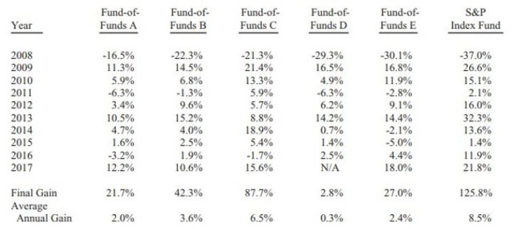
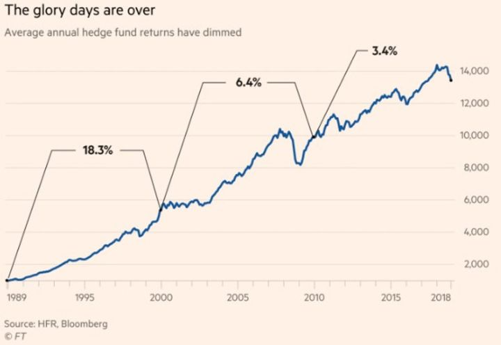

Onko aktiivinen salkunhoito menneen talven lumia?
”I’ll still wake up sweating once a year, worrying that we’ve just gotten lucky forever.” - Cliff Asness
Vuonna 2005 Warren Buffett väitti, että aktiiviset salkunhoitajat tulisivat keskimäärin häviämään pitkässä juoksussa alhaisen kustannuksen indeksirahastolle. Kuka tahansa voi lyhyellä aikavälillä onnistua tuurilla. Pitkällä aikavälillä, argumentoi Buffett, aktiivinen salkunhoitaja tulisi häviämään jos ei muutoin, niin korkeampien hallinnointipalkkioiden vuoksi. Hän tarjoutui lyömään vetoa asiasta kenen tahansa halukkaan kanssa.
Vasta vuonna 2007 huutoon vastattiin. Ted Seides (jolla muuten on erinomainen podcast) tarttui haasteeseen. Vedon ehdoissa sovittiin, että Seides saisi valita viisi hedge fund-rahastojen rahastoa, jotka yhteensä sijoittivat yli kahteensataan hedge fundiin. Tällä tavoin saatiin varsin kattava otos aktiivisesti hoidetusta rahasta. Vedon vertailujaksoksi sovittiin kymmenen vuotta. Buffett valitsi Vanguardin S&P500 -indeksirahaston (VOO), jonka kokonaiskustannus per vuosi on 0.04%.
Se, kumman valinta – Buffettin VOO tai Seidesin hedge fundit – tuottaisi enemmän palkkioiden jälkeen, voittaisi ja jakaisi miljoona taalaa yhteisestä potista valitsemalleen järjestölle hyväntekeväisyyteen.
Buffett kuvaa vetoa ja sen tuloksia vuosien 2016 ja 2017 sijoittajakirjeissään:

Kuten arvata saattaa, Omahan oraakkeli oli jälleen oikeassa. Eikä niin pienellä marginaalilla. Aktiivisesti hoidetut rahastot tuottivat palkkioiden jälkeen keskimäärin ~3% per vuosi (yksi rahastoista jopa likvidoitiin viimeisenä vuotena). Indeksirahasto sen sijaan ylsi 8.5% keskimääräiseen vuosituottoon.
Suomessakin aktiivisen salkunhoidon huono performanssi on puhuttanut. HEX25-indeksiin passiivisesti sijoittava rahasto on parina viime vuotena ollut paras Suomi-rahasto. Viimeisten viiden vuoden aikana ainoastaan yksi aktiivisesti hoidettu rahasto on ollut keskimääräisellä vuosituotollaan parempi.
Ilmiö on valitettavan yleinen. Mitä pidempi tarkastelujakso, eli mitä pienempi on tuurin merkitys tuottoihin, sitä suurempi osuus salkunhoitajista häviää indeksille. Toisin sanoen, heidän palvelunsa salkunhoitajina ei ole ollut heille maksettujen hallinnointipalkkioiden arvoista. (Toki lopputuloksia voidaan arvioida usealla tapaa - kuten riskikorjattuna tuottona - mutta yleisesti salkunhoitajille maksetaan vertailuindeksin ylittävästä tuotosta.)
Miten tähän on tultu ja millainen on aktiivisen varainhoidon tulevaisuus? Aktiivisella salkunhoidolla kun on jatkossakin tärkeä rooli, kuten tulemme näkemään. Entä millaisia haasteita aktiivisesti hoidettuun rahastoon sijoittavalla on? Ja miksi myös sijoittajalla on peiliin katsomisen paikka?
Hedge fundeja pidetään universumin kovimpina sijoittajina. Heidän kulta-ajat näyttävät olleen ohi jo hyvän aikaa sitten. Jos vielä 1990-luvulla niiden keskimääräinen tuotto per vuosi oli yli 18%, on se finanssikriisin jälkeen ollut enää se reilu 3%.
Heikko tuotto ja passiivisten sijoitusvaihtoehtojen suosio on aivan oikeutetusti antanut painetta hedge fundien palkkiorakenteelle. Vanha 2+20-malli, jossa rahastot veloittavat joka vuosi 2% sijoitetuista varoista ja 20% tuotoista, ei sentään ole enää normi. Nykyään palkkiorakenne on arvion mukaan keskimäärin noin 1.5% ja 17%.

Vielä 90-luvun hedge fundien kulta-aikana, kun kilpailu oli vähäisempää, oli tuottojen tekeminen kenties helpompaa. Tuolloin, jos pitäisi veikata, kestävää ylituottoa teki kourallinen rahastoja. Sittemmin hedge fund-teollisuuden hallinnoimat varat ovat paisuneet yli 3.2 biljoonaan dollariin. Nykyään, jos pitäisi veikata, edelleen nuo samat kourallinen rahastoja tekevät kestävää ylituottoa.
Hedge fundiin sijoittavalla on useampi ongelma.
Ensinnäkin, näistä kourallisesta sijoittajasta suuri osa ei ota sisään uutta rahaa. Jim Simonsin Renaissance Technologies on viimeisten 28 vuoden aikana tuottanut sijoittajilleen enemmän rahaa kuin yksikään muu hedge fund maailmassa. Heidän paras rahastonsa Medallion on kuitenkin ainoastaan firman työntekijöille ja näin ollen suljettu ulkopuolisilta sijoittajilta. Sen tuottojen on puhuttu selvästi ylittäneen heidän ulkopuolisille tarjottujen rahastojen tuoton.
George Soros ja Stanley Druckenmiller samoin eivät hoida enää ulkopuolista rahaa. He ovat keskittyneet ainoastaan perheensä varojen sijoittamiseen. Legendaarinen arvosijoittaja Seth Klarman avasi rahastonsa uusille sijoittajille ainoastaan kerran, vuonna 2008, jolloin hän aivan oikein näki mahdollisuuksia markkinoilla. Eli ne, joille haluaisi antaa rahansa, ei niitä huoli.
Toisekseen, mistä voi tietää, milloin ja kenelle pääomansa kannattaa allokoida? Vastaus ei ainakaan löydy edellisenä vuotena parhaiten pärjänneiden salkunhoitajien listalta. Todennäköisesti tuolloin parhaiten tuottaneet rahastot eivät ole enää seuraavana vuonna parhaiten tuottaneiden listalla. Tuotolla kun on tapana palautua pitkän aikavälin keskiarvoonsa. Tästä on näyttöä maailman sivu.
Aktivistisijoittaja Bill Ackman komeili Forbes-lehden kannessa vuonna 2015 otsikolla ”Baby Buffett”. Hänellä oli takanaan ennätysvuosi ja hänestä kaavailtiin seuraavaa oraakkelia. Seuraavina kolmena vuotena hänen menestyksensä mureni täysin. Vuonna 2016 hänen rahastonsa arvo laski 14% kun samalla markkina nousi 11%. Vastaava meno jatkui 2017-18. Jos Ackmaniin rahastoon olisi sijoittanut tuon hohdokkaan kansikuvan jälkeen, olisi tullut noutaja.
Kolmanneksi, kun on päätynyt antamaan varansa jonkin salkunhoitajan tai tiimin hoidettavaksi, pitäisi jotenkin pystyä arvioimaan yli ajan onko heidän sijoitusprosessinsa edelleen kunnossa. Yksikään sijoitusstrategia kun ei toimi aina. Välillä tulee pidempiäkin aliperfomanssin jaksoja. Se ei kuitenkaan välttämättä tarkoita, että heidän strategiansa ei toimisi. He voivat olla väärässä niin sanotusti oikeista syistä.
Joskus kuitenkin salkunhoitaja on päättänyt yhtäkkiä vaihtaa strategiaa. Tuolloin sen toimimisen arvioiminen on hankalaa. Joskus avainhenkilöitä on lähtenyt tai heillä on henkilökohtaisia haasteita. Esimerkiksi David Einhornin useamman vuoden haasteiden on spekuloitu osaltaan johtuvan hänen avioerostaan.
Lopuksi, jotta tämäkään ei olisi liian yksinkertaista, on sijoittajilla on haasteena myös oma itsensä. Sijoittajia nimittäin riivaavat ahneus ja pelko. Tämäkin on valitettavan yleinen ilmiö. Sijoittajat päätyvät arvioimaan salkunhoitajien performanssia vuosi- tai jopa kvartaalitasolla. Riippuen tuottotason tyydyttävyydestä, sijoittajat äänestävät rahoillaan.
Tämä on johtanut siihen, että salkunhoitajien performanssiin on alkanut vaikuttamaan urariski. Se, jos pelkää työpaikkansa puolesta pidempään jatkuneen huonon tuottojakson jälkeen, saa epäilemään strategiaan ja prosessiaan. Ja se on saanut salkunhoitajat joko myötäilemään indeksiä (alhainen active share) tai sijoittamaan samoihin suosittuihin osakkeisiin, joihin muutkin (bandwagon-efekti). Koetaan, että on parempi onnistua tavallisin keinoin, kuin epäonnistua epätavallisin keinoin.
Toki tilastot kertovat karua kieltään aktiivisen salkunhoidon huonosta historiallisesta performanssista. Sen ei ole kieltäminen. Osaltaan siihen on kuitenkin vaikuttanut myös loppusijoittajan lyhytnäköisyys.
Koska tuuri voi vaikuttaa merkittävästi lyhyen aikavälin tuottoon, on ensiarvoisen tärkeää keskittyä tuoton sijaan prosessiin. Kullekin strategialle pitää antaa aikaa toimia. Siksi maailman menestyneimmät sijoittajat ovat monesti sellaisia, joille sallitaan ajoittaiset heikot kaudet. Tietenkin taito lopulta ratkaisee, mutta taidolle pitää antaa mahdollisuus tulla satunnaisuuden seasta esiin.
Itse Warren Buffett ei ole pärjännyt indeksille viime vuosina (Berkshire Hathawayn 10v kokonaistuotto 342% vs S&P500 +412%). Buffett uskaltaa olla erilainen. Se on tärkeä sijoittajan ominaisuus. Vain se mahdollistaa pitkällä aikavälillä erilaiset ja mahdollisesti paremmat tuotot. Buffettia tuskin kiinnostaa miten hänen tuottonsa lyhyellä aikavälillä pärjää indeksille.
Aktiivinen salkunhoito juontaa juurensa antiikin Roomaan 300-luvulle eaa. Jos se on selvinnyt vuosituhansien haasteista, selviää se myös passiivisen sijoittamisen paineesta.
Aktiivista salkunhoitoa nimittäin tarvitaan. Ilman sijoittajia, jotka aktiivisesti ottavat riskiä markkinoilla, ei hinnanmääritys olisi tehokasta. Keneltä passiivinen indeksirahasto ostaisi osakkeita ellei kukaan olisi myymässä? Aktiiviset sijoittajat tarjoavat siis likviditeettiä. On tieteellistä näyttöä siitä, että mitä aktiivisemmin yhtiön osakkeet on omistettu, sitä tehokkaampi on osakkeen hinnan muodostus.
Jotta sijoittaja olisi aktiivisesti ottamassa riskiä markkinoilla, on sieltä löydyttävä tuottomahdollisuuksia. Nyt kun passiiviset rahastot ovat suistamassa salkunhoitajia työttömiksi, ovat jotkut pelänneet mitä hinnan määritykselle tapahtuu. Muuttuuko markkina tehottomaksi?
Toisaalta toiset ovat ennakoineet aktiivisen salkunhoidon menestyksen paluuta tehottomaksi muuttuvan markkinan luodessa mahdollisuuksia. Hypoteettisesti rajusti kärjistäen, jos maailmassa olisi jäljellä ainoastaan yksi aktiivinen sijoittaja, saattaa hänellä olla mahdollisuus ostaa osakkeita ilmaiseksi tai myydä osakkeita äärettömään hintaan. Tuo mahdollisuus houkuttelisi muita sijoittajia jälleen apajille.
Voi kuitenkin käydä juuri päinvastoin. Ennen kuin salkunhoitajien tilanne helpottaa, voi se vielä vaikeutua. Nimittäin todennäköisesti ensin pois pelistä joutuvat heikoimmin pärjäävät salkunhoitajat. Jäljelle jäävät ovat todennäköisemmin paremmin informoituja ja yksinkertaisesti parempia sijoittajia.
Tämä on sama kuin jos pokeripöydästä poistuisi ensin heikoimmat pelaajat. Jotta yksi voisi voittaa, tulee toisen hävitä. Jos nuo heikot pelaajat katoavat, voi jäljelle jääneille hyville pelaajille jäädä vähemmän mahdollisuuksia ja sen sijaan parempia vastustajia. Kilpailu kovenisi.
Paradoksaalisesti markkinoista tulisi siis enemmän tehokkaat, ja niille aktiivisille pelureille, jotka markkinoille jäävät, vähemmän houkuttelevat. Se puolestaan karsisi kilpailua kun osa pelureista luovuttaa vaatimattomien tuottojen edessä. Ja näin uusi mahdollisuus olisi syntynyt.
Stock picking on vaikeaa. Vielä vaikeampaa on valita oikeat stock pickerit. Tutkimustenvalossa ei pitäisi valita salkunhoitajaa, jolla on hyvä viime ajan performanssi. Päinvastoin. Tärkeää olisi valintakriteereinä arvioida sijoitusfilosofia ja prosessi, sekä itse ihmiset.
Aktiivisesti sijoittavia rahastoja tarvitaan jatkossakin. Lopulta heidän tilanteensa myös helpottanee. Siihen voi kuitenkin mennä vielä tovi. Osaltaan rahastoon sijoittava voi edesauttaa asiaa yrittämällä ymmärtää pitkäaikaisen sijoittamisen lainalaisuuksia. Selvää ryhtiliikettä tarvitaan kuitenkin myös salkunhoitajien puolelta.
Toki passiiviset rahastot ovat useimmille se järkevin vaihtoehto. Ihminen kuitenkin haluaa uskoa ylituoton mahdollisuuteen. Siksi sen yrittämisestä ollaan valmiita maksamaan myös jatkossa. Joka tapauksessa sekin on parempi vaihtoehto kuin makuuttaa varojaan pankkitilillä.
Ensi viikolla avaamme yleisön pyynnöstä sitä, miten Nomad Invest pyrkii aktiivisesti sijoittamaan varojaan.
Jos muuten haluaa tehdä meille ehdotuksia kirjoitusaiheista, voi sen tehdä Twitterissä tai sähköpostilla info@nomadinvest.fi.